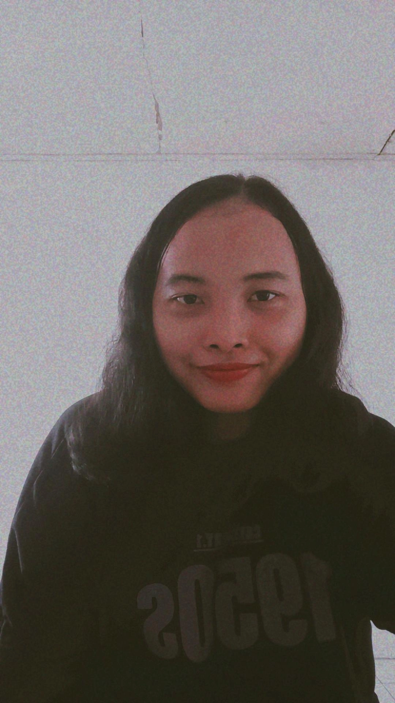

Divisi Candidate College

Alfia F

Angeline Novena Tricia

Ayu Widya

Kharisma Putri Setiya W

Mutiaturrohma

Putri Novirianti R
Testimoni
Seru banget bisa gabung dan jadi keluarga besar di Candidate College. Disini aku dapet banyak pengalaman dan pemahaman baru sebagai Head of Division, terkhusus di Divisi Web Development. Leadership, manajemen waktu, dan berbagai kemampuan lain juga berkembang selama aku di Candidate College.

Said Nur Octavianto
Awalnya kaget ya dipercaya buat jadi HOD Treasurer di Candidate College dari batch 3 kemudian lanjut ke batch 4. Seneng banget bisa gabung ke CC karena tentunya banyak pengalaman dan temen-temen baru yang aku dapetin. Even kita kerjanya profesional, tapi kalau ngobrol tetep santai banget kayak temen. CC juga jadi tempat aku belajar banyak hal baru dan improved myself a lot. Intinya sih ga nyesel udah gabung ke CC selama 2 periode ini.

Dwi
awalnya b aja, karna masih ngerasa hah apaan sih, terus kya kok ga ngerangkul semua, kok kya yang deket” aja sih, ternyata itu cuma kya valuation yg sedikit salah dari aku ke kalian wahai cc, ya mungkin karna kita jg baru dipertemukan ya. at least, semua asik, walaupun ya aku kdg molor, mon maap aku magang+kegiatan kampus, tp kalian ttp supportive, masih ngasih eval yg jg aku butuhin, dan masih byk healingnya ya bisa di blg. jujurly, even aku cape, kalo kalian lagi ribut di grup becanda” aku seneng, pertahanin terus ya cc, dan aku harap bisa wider lagi ngerangkulnya, semangat!
.png)
Frederick Ronaldo
Seneng banget diberi kesempatan untuk masuk menjadi bagian keluarga Candidate College batch 4 ini khususnya di Secretary, karena banyak banget hal baru yang aku pelajari disini, seperti mengatur jalannya pembuatan seluruh berkas kesekretariatan dari awal hingga didistribusikan dengan tepat dan tentunya bersama dengan teman-teman Secretary lainnya yang super duper solid dan gercep

Angelina Christy
Menjadi bagian dari Candidate College selama kurang lebih sembilan bulan membuat aku memiliki banyak pengetahuan baru. Aku dapat berkembang selama berproses, mulai dari staff hingga ditawarkan menjadi Head di divisi Public Relation. Bersyukur juga bisa menjadi bagian dari CC, karena CC organisasi yang sangat terstruktur, bisa mengenal bahkan akrab dengan teman di luar kampus, sikap kekeluargaannya, dan anggota-anggota yang ceria luar biasa. Aku juga berterima kasih kepada CC karna sudah menyediakan wadah untuk aku, teman-teman lainnya untuk berproses dan berkembang.
Lidya
Seneng banget diberi kesempatan untuk masuk menjadi bagian keluarga Candidate College batch 4 ini khususnya di Secretary, karena banyak banget hal baru yang aku pelajari disini, seperti mengatur jalannya pembuatan seluruh berkas kesekretariatan dari awal hingga didistribusikan dengan tepat dan tentunya bersama dengan teman-teman Secretary lainnya yang super duper solid dan gercep

Ody
Omegat jujurly seneng banget bisa menjadi bagian di CC ini, banyak sekali hal yang aku dapat dari bergabungnya aku disini, dari awalnya aku seorang staff dan sekarang dapat kepercayaan menjadi Head of Division perubahan yang sangat signifikan buat hidup aku. Aku bisa survive banyak hal disini, selain itu lingkungan kerja yang ada juga sangat membantu dan support aku buat menyelesaikan setiap pekerjaan. And aku bangga banget bisa kenal sama orang-orang di dalam sini dan bahkan kerja bareng. Pokoknya asikuy deh!

Riska Stephanie
Comfy. Satu kata yang dari gue buat CC. Cara kerjanya, lingkungan pertemanan, bahkan hal hal yang tadinya gue engga tau. Ketemu temen-temen yang ternyata satu frekuensi itu nilai plus banget sih. Pokoknya, it’s very worthy to join Candidate College!

Rizka Ramadhanti
Overall bener-bener nyaman sama environment nya, walaupun adaptasi awal-awal tu rasanya mixed feelings, tapi satisfied banget sama GM, HoD lain and bu ketua. Banyak yang bisa dipelajari sebagai HoD dan juga sebagai anggota, susah seneng pasti dirangkul banget dan pastinya ga pernah ngerasa ditinggal sendiri-sendiri di sini.

Yemima Astrid